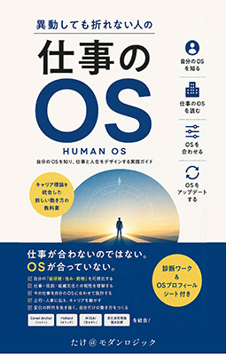

仕事が合わないのではない。
OSが合っていない。
異動、昇進、転職。仕事が変わるたびに感じてきた「向いていないかもしれない」は、能力の問題ではない。
異動、昇進、転職──。仕事が変わるたびに「自分には向いていないのかもしれない」と感じてきたあなたへ。 それは能力の問題ではなく、あなたと仕事の間にある小さな「OSギャップ」かもしれない。
著者：たけ＠モダンロジック ／ Kindle版 ／ Kindle Unlimited対応 ／ 診断ワーク・チェックリスト付き

本書の紹介動画
こんな感覚を、抱えていませんか
一つひとつは小さなことに見えても、積み重なると大きな消耗になる
月曜日の朝、目が覚めた瞬間に気持ちが重くなる
異動や昇進のたびに、前の自分に戻れない感覚がある
成果は出しているのに、なぜか手応えを感じられない
「向いている仕事」を探し続けているのに、答えが見つからない
頑張っているのに、評価にも自信にもつながらない
部下や後輩の力を、もっと引き出したいのにうまくいかない
正体は、「OSギャップ」
パソコンにOSがあるように、人にも仕事を動かす「OS」がある。会社は「仕事」を基準にあなたを配置するが、あなたは「OS」を基準に仕事を感じている。この二つの基準のズレが、気づかれないまま積み重なっていく

同じ会社、同じ肩書きでも、OSが合っているかどうかで働きやすさはまったく違うものになる
5つの理論から、自分のOSを浮かび上がらせる
キャリア理論として個別に語られてきた枠組みを、一つの「仕事のOS」として統合。感覚ではなく、構造として自分を理解できる
キャリア・アンカーAnchor
譲れない価値観。専門性／安定／自律／奉仕／創造性／挑戦の6分類
ホランドの六角形Interest
興味のパターン。どんな活動にエネルギーが湧くかを可視化する
IKIGAIPurpose
好き・得意・稼げる・必要とされるの重なりから、生きがいを捉える
自己決定理論Motivation
やる気の源。自律性・有能感・関係性という内発的動機の3要素
自分の強みStrength
無理なく発揮できる力。得意なことと役割の重なりを見つける

図解つきで、5つの理論をそれぞれ丁寧に解説
仕事にもOSがあり、組織にもOSがある
働きやすさを決めるのは、「自分のOS」だけではない。「仕事のOS」「組織のOS」との重なりが、満足度を左右する

三つが重なるほど、働きやすさが高まる
営業のAさんの場合
成績も評価も悪くないのに、商談のたびに「しんどい」と感じていたAさん。本当のOSは、専門性を深め、分析することに喜びを感じるタイプだった
「今日も、何を話せばいいか分からなくて、しんどかったです。」
営業成績は悪くなく、上司からの評価も高い。それでも、日々の関係構築中心の営業活動には手応えを感じられずにいた。
上司に相談し、既存顧客への提案資料づくりを、より多く担当させてもらえるよう調整。
3か月後、資料はチーム内で評価される機会が増え、表情にも余裕が戻ってきた。
転職しなくても、OSは整えられる
仕事そのものを変えられなくても、OSは4つの方法でチューニングできる
見方を変える
同じ仕事でも、意味づけを変えればエネルギーの源泉が変わる。
役割を変える
チームの中で、得意な人に役割を寄せるだけで適合度が上がる。
時間配分を変える
自分のOSを満たす「OS時間」を意識して確保する。
対話を変える
「できない仕事」ではなく「力を発揮できる条件」を伝える。
目次
実在の会社員を模したケーススタディと、その場ですぐ試せるチェックリスト・ワークシートを各章に収録
仕事が苦しいのは、能力のせいではない
仕事が苦しい本当の理由
努力信仰という落とし穴／相性という盲点／「仕事のOS」という視点
あなたの仕事のOSを知る
キャリア・アンカー／ホランドの六角形／IKIGAI／自己決定理論／自分の強み
仕事にもOSがある
仕事OSという発想／会社にもOSがある／チーム全体のOSが偏るとき
OSを合わせる
見方・役割・時間配分・対話を変える4つのチューニング法／診断チェックリスト
OSを伝える
上司・人事への伝え方／アンカー別・伝え方のフレーズ集／OSプロフィールをつくる
OSをアップデートする
ライフステージという視点／世代によるOSの傾向／AI時代に求められるOS
あなたは仕事をするために生きるのではない
OSは、一生同じではない
キャリアの段階によって、大切にしたいOSは変化していく。今のOSを知ることは、この先ずっと使える視点になる

こんな方におすすめです
仕事は、与えられるものではない。
自分のOSに合わせて、一緒に設計するもの。
読み終える頃には、「向いている仕事」を探すのをやめて、今いる場所で、自分のOSをどう動かせばいいかが見えてくるはずである。